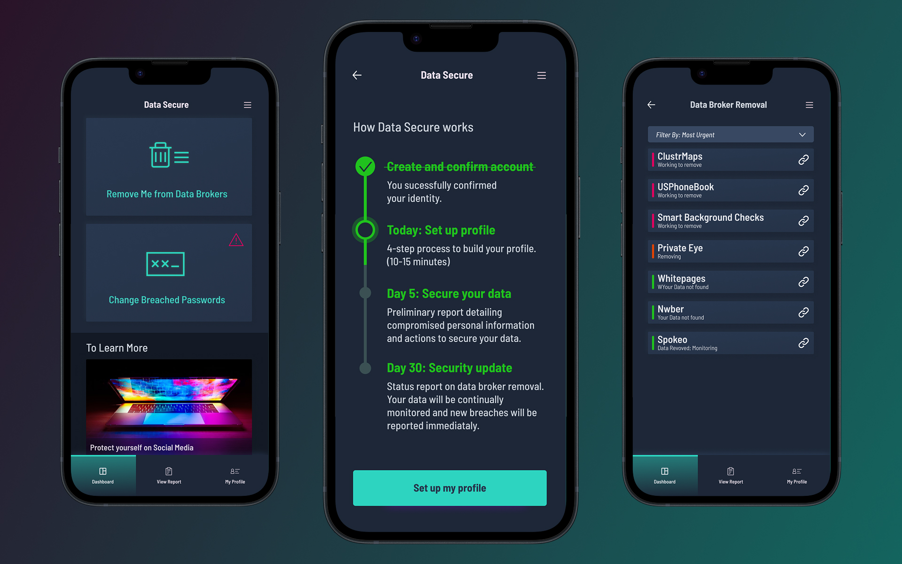

People were not completing the setup process. Alerts remained unresolved because people failed to log back on and complete tasks.
Cybersecurity · Mobile app
Data privacy app
Increase the participation and completion of PII Data security removal application.
- Role
- UX/UI Designer
- Team
- Pitch only
- Timeline
- 4 weeks
What this design changes:
Reframe the application from a checklist to a educational hub that encourages people to return. Tasks to be done are displayed clearly with an expectation of effort required. Direct action takes place from the alert.

The problem
What I did
- Mobile first design so urgent tasks can be completed quickly.
- The setup is broken into clear tasks label with a effort expectation.
- Educational resources provide added value for return visits.